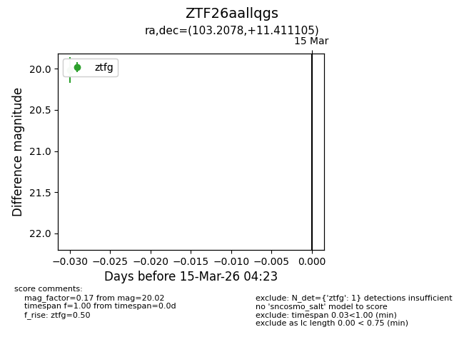
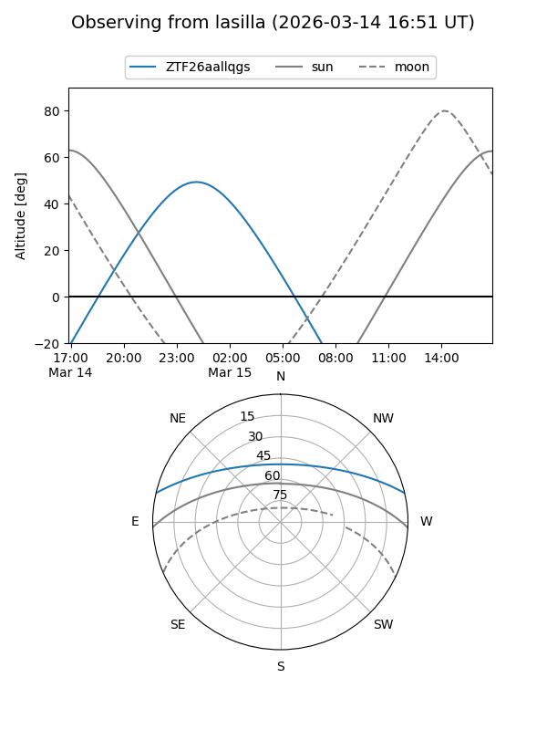
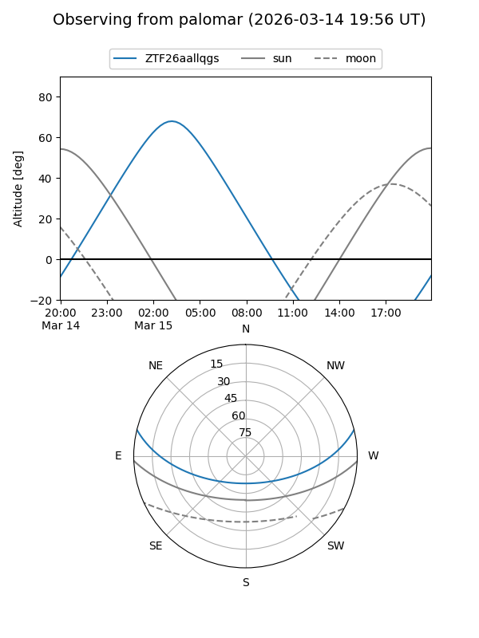

ZTF26aallqgs
Target ZTF26aallqgs at 2026-03-15 04:25
Aliases and brokers:
FINK: link
Lasair: link
ALeRCE: link
alt names
ZTF26aallqgs (ztf,fink_ztf)
Coordinates:
equatorial (ra, dec) = 103.2078,+11.41110
equatorial (HMS+DMS) = 06:52:49.88,+11:24:39.98
galactic (l, b) = (202.9021,+5.48121)
Flags:
Photometry:
last ztfg=20.02
1 ztfg detections
Lightcurve

Visibility


Additional plots